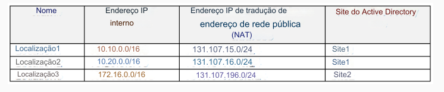
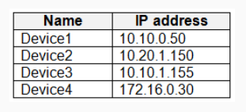
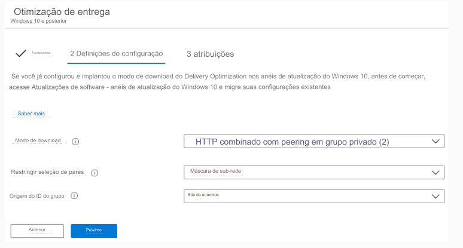
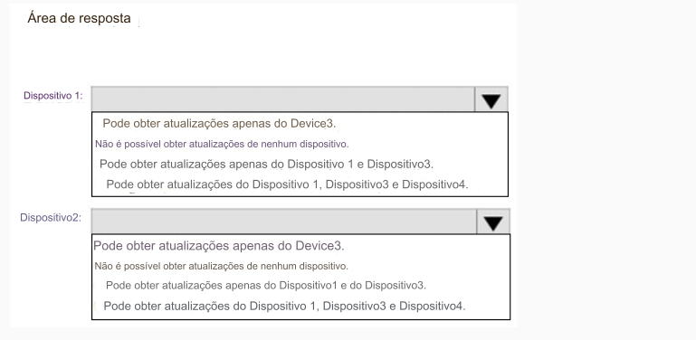

214- PONTO DE ACESSO
Sua rede contém um domínio do Active Directory local que contém os locais mostrados na
tabela a seguir.

No Microsoft Intune, você registra os dispositivos Windows 10 mostrados na tabela a seguir.

Você tem um perfil de configuração de dispositivo Delivery Optimization aplicado a todos os dispositivos. O perfil é
configurado conforme mostrado na exposição a seguir.

De quais dispositivos o Dispositivo1 e o Dispositivo2 podem obter atualizações? Para responder, selecione as opções apropriadas
na área de resposta.
NOTA: Cada seleção correta vale um ponto.
